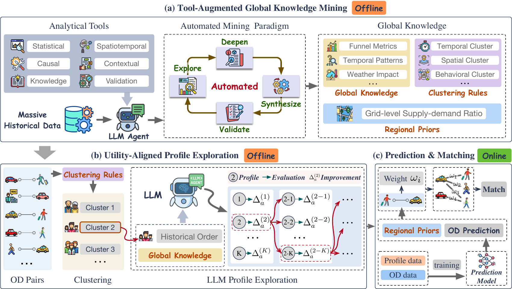
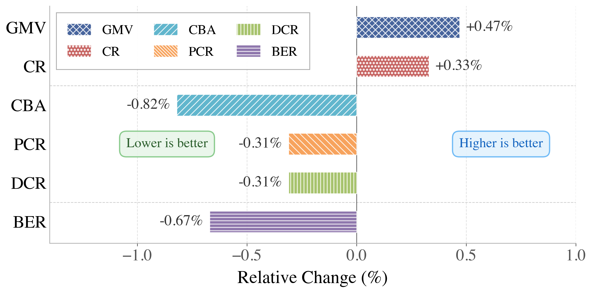
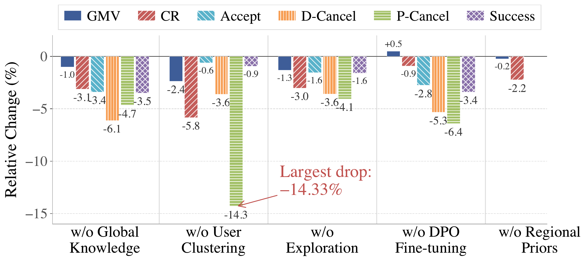
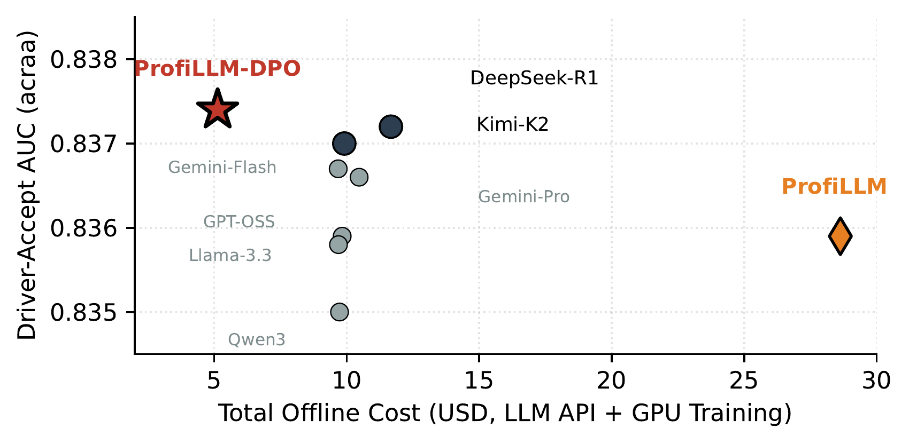
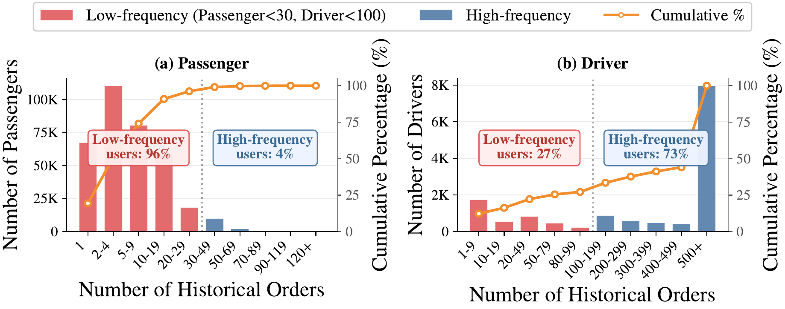

1The Hong Kong University of Science and Technology (Guangzhou) · 2DiDi Chuxing
*Equal contribution, during an internship at DiDi Chuxing. · †Corresponding author

Bringing Large Language Models (LLMs) into industrial ride-hailing dispatch as semantic feature extractors over platform-scale behavioral logs is a compelling but under-explored data systems problem. Production matching pipelines remain dominated by structured numerical features, yet decisive behavioral signals (e.g., a driver's habitual aversion to certain regions) are inherently contextual and naturally expressible as LLM-generated user profiles. However, scaling such profiling to a live, millisecond-latency dispatcher faces three intertwined constraints rarely addressed together: logs exceed any LLM's context window by orders of magnitude; most users are long-tail; and surface-fluent profiles do not necessarily improve downstream prediction utility.
We present ProfiLLM, an agentic LLM data pipeline with two modules. (1) Tool-Augmented Global Knowledge Mining equips an LLM agent with 27 analytical tools to mine platform-scale data, producing reusable global knowledge, adaptive clustering rules, and regional supply–demand priors. (2) Utility-Aligned Profile Exploration generates candidate profiles per cluster, evaluates them via a lightweight downstream-utility proxy, iteratively refines the best, and constructs preference pairs for DPO fine-tuning. A strict offline–online contract keeps all LLM reasoning offline; online serving reduces to a cached cluster-embedding lookup with sub-millisecond overhead and zero online LLM inference. Deployed on DiDi's production dispatcher, ProfiLLM achieves up to +6.14% AUC, up to +4.35% simulation GMV, and a 14-day A/B with +0.47% GMV, +0.33% CR, and −0.82% Cancel-Before-Accept.
Behavioral signals that structured features miss are decisive for dispatch, yet an LLM cannot run inside a 2-second matching loop. ProfiLLM mines logs with an agentic toolkit, DPO-aligns cluster profiles to a downstream-utility proxy, and keeps all LLM reasoning offline — so the online path is a cached lookup that lifts prediction and matching quality at sub-millisecond cost.
ProfiLLM materializes a strict offline–online decoupling as a three-layer pipeline (see the overview figure above): all LLM reasoning runs in offline batch jobs, and the latency-critical dispatcher consumes only pre-computed artifacts.
An LLM agent equipped with 27 analytical tools mines platform-scale logs under an Explore–Deepen–Validate–Synthesize paradigm, producing global knowledge \(\mathcal{K}\), an interpretable clustering rule set \(\mathcal{A}\), and regional supply–demand priors \(\mathcal{R}\).
For each cluster, candidate profiles are generated, scored by a lightweight LOGIC-rule utility proxy, iteratively refined on prediction-error feedback, and distilled via DPO into a single-pass generator; each profile is encoded once into a \(d\)-dimensional embedding.
Per OD pair, serving performs only a deterministic cluster-rule lookup and a cached embedding fetch, concatenated with structured features for the production multi-task predictor. Zero online LLM inference; under 0.01 ms added per pair.
The only artifacts crossing the offline–online boundary are the rule set \(\mathcal{A}\) and the cluster-embedding table \(\{\mathbf{e}_a\}\) — the structural reason ProfiLLM fits within DiDi's 200 ms dispatch budget without modifying the matching stack.
ProfiLLM consistently outperforms traditional and naive-LLM baselines across three cities. Below are the full result tables (transcribed for on-page reading) and the headline figures. Bold burgundy = per-column best; tinted rows are our methods; gray = negative.
| Method | City A | City B | City C | |||
|---|---|---|---|---|---|---|
| GMV | CR | GMV | CR | GMV | CR | |
| TVal | +2.24 | +2.14 | +1.87 | +1.63 | +2.56 | +2.48 |
| GRC | +0.73 | −3.42 | +1.15 | −2.18 | +0.41 | −1.87 |
| Llama-3.3-70B | +2.34 | +2.76 | +1.92 | +2.31 | +2.68 | +3.12 |
| Qwen3-Next-80B | +2.41 | +2.54 | +2.08 | +2.12 | +2.75 | +2.89 |
| DeepSeek-R1 | +2.53 | +4.57 | +2.17 | +3.89 | +2.91 | +4.93 |
| Kimi-K2 | +1.96 | +4.77 | +1.63 | +4.05 | +2.24 | +5.18 |
| GPT-OSS-120B | +2.44 | +5.75 | +2.06 | +5.12 | +2.79 | +6.08 |
| Gemini-3-Flash | +1.41 | +4.62 | +1.08 | +3.94 | +1.72 | +4.95 |
| Gemini-3-Pro | +2.95 | +5.48 | +2.51 | +4.83 | +3.28 | +5.81 |
| ProfiLLM-DPO | +4.02 | +6.03 | +3.58 | +5.47 | +4.35 | +6.41 |
| ProfiLLM | +3.52 | +7.10 | +3.14 | +6.52 | +3.87 | +7.53 |
| Method | City A | City B | City C | |||||||||
|---|---|---|---|---|---|---|---|---|---|---|---|---|
| Acc | D-Can | P-Can | Succ | Acc | D-Can | P-Can | Succ | Acc | D-Can | P-Can | Succ | |
| Llama-3.3-70B | −1.10 | −0.71 | +0.19 | −1.14 | −0.64 | +0.38 | −0.38 | −0.45 | −0.01 | −0.34 | +0.25 | +0.01 |
| Qwen3-Next-80B | −0.22 | −0.38 | +1.65 | +0.02 | −0.52 | −0.40 | −5.71 | −7.57 | −0.03 | −0.16 | +0.27 | −0.06 |
| DeepSeek-R1 | +0.06 | +0.23 | +2.05 | +0.25 | +0.31 | +1.85 | +1.06 | +0.48 | +0.21 | −0.13 | +0.04 | +0.14 |
| Kimi-K2 | −0.17 | +0.82 | +2.11 | −0.07 | −2.44 | −0.44 | −6.33 | −1.91 | +0.50 | −0.11 | +0.40 | +0.45 |
| Gemini-3-Flash | +0.10 | +0.53 | +1.83 | +0.42 | +0.24 | +1.76 | −0.11 | +0.38 | +0.03 | −0.26 | +0.37 | +0.04 |
| Gemini-3-Pro | −0.08 | −0.68 | +2.37 | +0.56 | −0.44 | +0.50 | +0.24 | −0.31 | +0.02 | −0.03 | +0.10 | +0.05 |
| GPT-OSS-120B | −0.02 | +0.14 | +1.83 | +0.17 | +0.11 | +1.64 | +0.63 | +0.29 | −0.09 | −0.02 | +0.44 | −0.06 |
| ProfiLLM-DPO | +1.51 | +2.76 | +6.02 | +1.72 | +2.25 | +4.98 | +5.55 | +2.58 | +0.65 | +5.93 | +5.30 | +2.37 |
| ProfiLLM | +1.56 | +3.88 | +6.14 | +1.80 | +2.26 | +4.98 | +6.00 | +2.60 | +0.84 | +5.95 | +5.65 | +2.48 |




| Headline claim | Value | Where to verify |
|---|---|---|
| Outcome-prediction AUC | +6.14% | Table 2 above (P-Cancel, City A) |
| Dispatching simulation GMV | +4.35% | Table 1 above (City C, ProfiLLM-DPO) |
| Online A/B GMV / CBA | +0.47% / −0.82% | Appendix O — Extended 14-day A/B |
| Added online latency | <0.01 ms/pair | Appendix N — Complexity analysis |
| Offline refresh cost | 10.6× cheaper | Appendix M — Offline system cost |
| Cluster coverage | 96 / 348,464 | Appendix M — Offline system cost (≈3,630×) |
The full appendix is rendered on this site for convenient review, with figure, table, and equation numbers matching the paper. Jump straight to any section:
Prefer the typeset version? Appendix PDF · Paper PDF · claim→evidence map.
@article{lyu2027profillm,
title = {{ProfiLLM}: Utility-Aligned Agentic User Profiling for Industrial Ride-Hailing Dispatch},
author = {Lyu, Tengfei and Yuan, Zirui and Liu, Xu and Wan, Kai and Lu, Zihao and Ma, Li and Liu, Hao},
year = {2026},
note = {Under submission to PVLDB (Scalable Data Science)},
url = {https://profillm.github.io}
}
A sanitized, symbolic reference implementation of the ProfiLLM pipeline is released at github.com/ProfiLLM/ProfiLLM. It runs end-to-end on synthetic mock data with a local mock LLM (CPU-only, no build pipeline), and mirrors the paper's components: the 27-tool catalog, the Explore–Deepen–Validate–Synthesize mining agent, the profile-exploration loop with the LOGIC-rule utility proxy and DPO preference-pair construction, the prompt templates, and a replay-simulator interface.